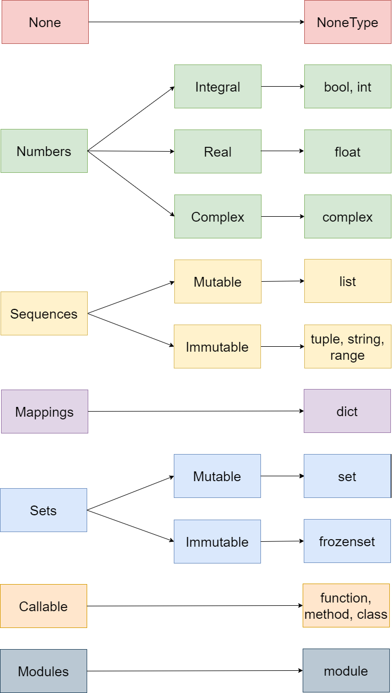

Python typing system
Contents
Python typing system¶
Overview¶
We can categorize data into two major types: built-in and user-defined.
Built-in types are is part of the language and are readily available when we installed Python
User-defined types are built by programmers (based on the built-in types) to suit their needs for more complex applications.
This book focuses mostly on the built-in types and some user-defined types developed by professional programmers. You won’t learn to build your own user-defined types in this book. In fact, you rarely create user-defined types when working as a data analyst/scientist even at intermediate levels.
Typing hierarchy¶
The following picture illustrates a bird-eye view of Python’s typing hierarchy. Note that the diagram is not complete. I only show common types that, based on my experience, are relevant and important.
None types are used to represent the state of being undefined/unknown (both in datatype and in value).
Being undefined is not the same as being empty. A variable of
listtype can be an empty list, but it still has a type.Python implementation:
NoneType.
Numbers are used to represent numeric values.
Python implementation:
int(integers),float(real numbers),complex(complex number),bool(truth values).Note that, in Python
booltype is a sub-type ofint. As you will see,TrueandFalseofboolis actually1and0ofint.
Sequences are used to represent an ordered collection of elements under the same name.
Python implementation:
list,tuple,range,strThe order of the elements of the sequence matters.
We access an element of a sequence using the sequence name and the element’s position (or index).
Mappings are used to represent a collection of key-value pairs.
Python implementation:
dict(dictionaries)Example
student = {"name": "Rob", "age": 20}There is no instrinsic order in a mapping.
We access an element of a dictionary using the correspondiong
key.
Sets are used to represent a set (as in mathematics)
Python implementation:
set,frozenset.Elements of sets are unique and are not ordered.
There is no way to access an element of a set. We can only check if a value is in a set or not.
Callable types are callable (you call/invoke a function or a method to do something)
Python implementation:
builtin_function_or_method(functions or methods),type(classes)
Note that there are other types that are not included in this chapter (and in this book). The main purpose is to provide the fundamentals, not to overwhelm you with types that you will never use.
How to check type¶
You can use type() function to check the type of a literal, expression, or variable.
Example 1: check types of literals
# None literal
type(None)
NoneType
# Bool literal
type(True)
bool
# Integer literal
type(4)
int
# Real literal
type(1.23)
float
# Complex literal
type(1 + 3j)
complex
# String literal
type("Hello")
str
# List literal
type([1, 2, 3])
list
# Tuple literal
type((1, 2, 3))
tuple
# Set literal
type({1, 2, 3})
set
# Dictionary literal
type({"name": "Bob", "age": 20})
dict
Example 2: check types of variables
Almost the same as in the previous examples. This time, you use the variable names instead.
# Integer variable
x = 5
type(x)
int
# String variable
x = "Hello. How are you?"
type(x)
str
# List variable
scores = ["A", "B", "C"]
type(scores)
list
Example 3: check types of expressions
When you check the type of an expression, Python will evaluate the expression and return the type of the result.
# Int expression
type(2 + 3)
int
# Float expression
type(2.5 + 1.2)
float
type("Hello." + " How are you")
str